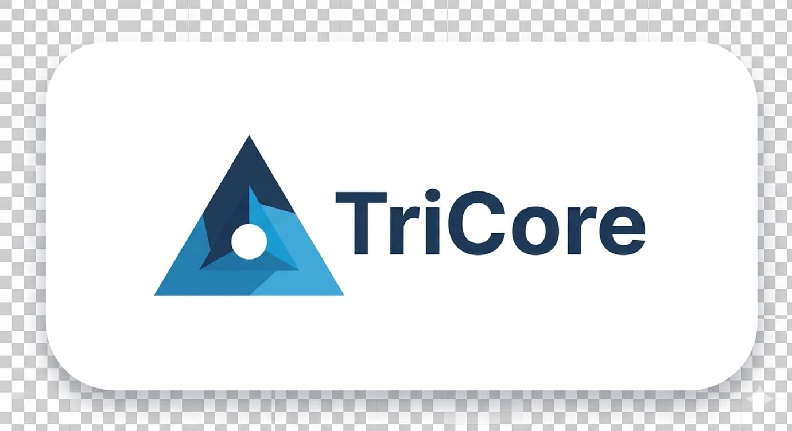

منصة TriCore تمنح فرق إدارة المشاريع تحليلات EVM في الوقت الفعلي، وتخطيطاً قائماً على WBS، وتنفيذاً عبر Gantt & Kanban، بالإضافة إلى المطالبات المالية — كل ذلك في منصة ذكية موحدة.
موثوق به من قِبَل فرق المشاريع في
مصمم لمديري المشاريع ومحللي PMO والمديرين التنفيذيين وأعضاء الفريق — كل منهم يتمتع بوصول محدد حسب الدور وأدوات مخصصة.
مقاييس القيمة المكتسبة — CPI، SPI، EAC، VAC، TCPI — تُحسب فوراً من WBS. يكشف المحرك تلقائياً عن تجاوزات التكلفة ومخاطر الجدولة قبل تصاعدها.
متوافق مع PMIحدد هيكل تفكيك العمل الهرمي مع المهام الملخصة وحزم العمل وعلاقات التبعية. قفل خطوط الأساس المعتمدة وتتبع كل انحراف بدقة.
خط الأساس مقفللا مزيد من رسم الجداول يدوياً. مخططات Gantt تبني نفسها من WBS مع سهام التبعية وتسليط الضوء على المتأخرات وعلامة "اليوم" الحية.
توليد تلقائياسحب حزم العمل عبر المراحل. كل حركة بطاقة تحدث فوراً نسب إكمال WBS وتعيد حساب مقاييس EVM في الوقت الفعلي.
مزامنة EVMسجل أوامر الشراء والفواتير والعقود مباشرة مقابل بنود WBS. تتبع التكاليف المقدرة والمعتمدة والفعلية مع سجلات مراجعة كاملة.
تدقيق ماليتقييم المخاطر باحتمالية × تأثير مع استراتيجيات التخفيف، وسير عمل طلبات التغيير الرسمية مع المسارات والموافقات الكاملة.
حوكمة متكاملةانضم إلى مئات فرق إدارة المشاريع التي تستخدم TriCore لتحقيق النجاح في كل مرة.